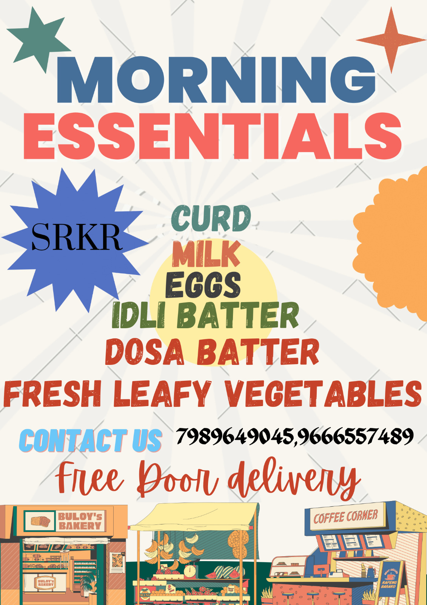

Hi, I'm Srinadh
Welcome to my portfolio website.
About Me
I am a diligent and focused individual currently pursuing studies in Computer Science and Design. With a keen eye for detail and a penchant for organization, I am eager to embark on my journey into the professional world.
Completed SSC (Secondary School Certificate) at Sri Chaitanya School with a perfect score of 10 out of 10 in the year 2020. Achieved 87% in the MPC (Mathematics, Physics, Chemistry) stream at Tirumala Junior College in the year 2022. Presently enrolled in the Bachelor of Technology (B.Tech) program at Sagi Rama Krishnam Raju Engineering College, specializing in Computer Science.
In addition to my academic pursuits, I actively participate in extracurricular activities such as coding competitions and tech workshops. These experiences have honed my problem-solving skills and fostered a collaborative mindset, which I believe are essential in today's dynamic and interconnected world.
My goal is to leverage my education and experiences to make meaningful contributions to the field of technology, driving innovation and solving real-world challenges. I am excited about the opportunities that lie ahead and am committed to continuous learning and growth in my chosen field.
Education
Engineering:
SRKR Engineering College,2022-2026
Intermediate:
Tirumala junior College,2020-2022
Schooling:
Sri Chaitanya Techno School,2020
Skills
!Communication
!Teamwork
!Critical thinking
!Python
!Java
!HTML, CSS, JavaScript
!C programming
!canva
!basics of game development
!blender
Projects
Community service project:
During our holiday trip to our native place, we undertook a survey to assess the level of technological integration among local shops. We systematically recorded data on various parameters such as digitalization, presence on Google Maps, and possession of a website. This initiative aimed to gain insights into the extent to which local businesses have embraced technology for their operations and marketing efforts. Our findings shed light on the current state of technological adoption within the local retail landscape, providing valuable information for both businesses and potential customers.
In addition to these parameters, we also examined the usage of point-of-sale (POS) systems, online ordering platforms, and social media presence among the surveyed shops. By gathering this comprehensive data, we aimed to identify trends in technology adoption and highlight areas where businesses could potentially improve their digital footprint. Through interviews and observations, we gathered qualitative insights into the challenges and benefits associated with incorporating technology into traditional brick-and-mortar establishments. This survey serves as a valuable resource for understanding the evolving landscape of small businesses in our native area and provides actionable recommendations for enhancing their competitiveness in an increasingly digital world.
Design Thinking:
Our endeavor in creating a morning essentials website exemplifies the application of design thinking methodology, a systematic approach that prioritizes understanding user needs and crafting solutions to address them effectively. Beginning with empathizing with our target audience, we immersed ourselves in their experiences, gaining insights into their morning routines, preferences, and challenges. This deep understanding guided us in defining clear objectives and identifying the key features and functionalities essential to enhance their morning routine. Utilizing ideation techniques, we brainstormed innovative solutions to meet the diverse needs of our users. Through prototyping, we translated these concepts into tangible representations, allowing us to visualize and refine the user experience iteratively. To ensure the effectiveness of our solutions, we subjected our prototypes to rigorous testing, gathering feedback from users to identify areas for improvement. This feedback loop enabled us to refine our designs, incorporating user insights to create a seamless and personalized experience tailored to meet the unique needs of our audience.
Quiz:
Our endeavor in crafting a quiz application epitomizes a comprehensive full-stack approach, seamlessly integrating various technologies and methodologies to deliver a robust and engaging platform. Commencing with the front-end development, we meticulously designed the user interface utilizing HTML, CSS, and JavaScript. This phase focused on creating an intuitive and visually appealing interface that enhances user interaction and experience. Transitioning to the back-end, we leveraged cutting-edge technologies such as Node.js or Python to architect the application's logic. This entailed the development of server-side functionalities, including user authentication, quiz generation, and result calculation.
Simultaneously, we meticulously designed a database schema to efficiently store and manage user data, quiz questions, and results. This database architecture was optimized for scalability, performance, and data integrity. Incorporating external APIs further enriched the application's functionality, enabling seamless integration of additional features such as social media sharing, leaderboard tracking, or real-time analytics. Following development, rigorous testing protocols were implemented to ensure the application's reliability, functionality, and security across various platforms and devices.